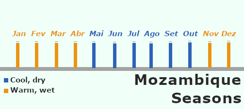

About Mozambique
Mozambique is a Portuguese-speaking coutry with over 40 others languages, located on the southeastern coast of Africa
Its territory stretches for over 2,500 kilometers along the warm Indian Ocean, which separetes the country from Madagascar
Mozambique - Google Mapsclimate
The climate is prodominantly tropical to subtropical sharped by the warm Indian Ocean current. Mainly the coutry has two seasons:
- A warm, wet season from November to April
- A cooler, dry season from May to October

Seasons in Mozambique - Touristic MozThe best time to visit Mozambique is during the dry season from May to October.
This period provides the most consistent sunny, warm weather, with clear skies and the calmest ocean conditions.
It is the ideal time for beach lounging, diving, and spotting humpback whales (which migrate through the coast from July to November).
Population
About the Mozambican population, they are approximately 36.6 million people being more than half of that a young people.
They are very traditional and religious. approximately 92% of the Mozambicans adhere to a religios faith. According to government and demografic data, the most common religions are:
- Christianity - With about 62% to 68% (inclunding Catholics, Pentecostals, and Anglicans)
- Islam - With about 18% to 21% (primarily concentrated in the northern regions)
- Traditional African religions/Non-religious - With about 7% to 14%
If you want to know a lot more about this topic, you can go to Afrobarometer official site to see more about Mozambique religions and more.
Traditional Dances
Traditional dances are an important part of Mozambican culture. They are often performed during celebrations, festivals, and social gatherings, and they serve as a means of storytelling, cultural expression, and community bonding.
The dances vary from region to region, reflecting the diverse ethnic groups and their cultural traditions.
Some of the most popular dances include:
Marabenta, Xigubo, Tufo and
Mapiko.
Below you will see two YouTube videos, the first is about Tufo and the other, about Xigubo
Tufo - Cabo DelgadoThis topic (traditional dances) is very large. If i want to know more about them youcan seek on Youtube or iven facebook for them.
Xigubo - Marracuene, MaputoEntry requirements
Requirements
The basic requirements are:
- A valid passport (usually with at least 6 months of validity).
- A visa, eTA, or visa exemption, depending on the traveler's nationality.
- A Yellow Fever vaccination certificate, only if arriving from or transiting through a country with a risk of yellow fever.
Recommendations
The items above are the basic entry requirements. We also recommend having the following:
- Travel insurance
- Return or onward ticket
- Hotel reservation or invitation letter
- Proof of sufficient funds
Whether these documents are required depends on your nationality, purpose of travel, length of stay, and where you are travelling from.
Visa requirements depend on your nationality. Before travelling, please check the official Mozambique eVisa website or contact the nearest Mozambican embassy or consulate.
Where can I stay?
Mozambique offers a wide range of accommodation for every type of traveler and budget. Whether you are visiting for business, a beach holiday, a safari, or a cultural trip, you will find suitable places to stay across the country.
Accommodation options include:
- Hotels – Available in most cities and tourist destinations, ranging from budget to luxury.
- Resorts – Popular along the coast and on islands, offering beachfront accommodation and leisure activities.
- Guesthouses – A comfortable and affordable choice, often managed by local families.
- Lodges – Common near national parks and nature reserves, ideal for wildlife experiences.
- Hostels – Suitable for backpackers and budget-conscious travelers.
- Self-catering apartments – A convenient option for families or longer stays.
Booking Tips
- Book your accommodation in advance during peak travel seasons and public holidays.
- Choose accommodation close to your planned activities or transport connections.
- Read recent guest reviews before making a reservation.
- Confirm whether breakfast, airport transfers, Wi-Fi, or parking are included.
- Check the property's cancellation policy before booking.
Popular Areas to Stay
- Maputo – Business, culture, restaurants, and nightlife.
- Tofo – Beaches, diving, and marine life.
- Vilanculos – Gateway to the Bazaruto Archipelago.
- Ponta do Ouro – Beaches, dolphin experiences, and water sports.
- Gorongosa National Park – Safari and nature tourism.
Prices, availability, and facilities vary depending on the season and location. Booking early is highly recommended , especially during holidays and the peak tourist season.
What Should I Visit?
Mozambique is home to breathtaking beaches, diverse wildlife, vibrant cities, and a rich cultural heritage. Whether you enjoy nature, history, adventure, or relaxation, there are many remarkable places to explore.
Some of the country's most popular destinations include:
- Maputo – The capital city, known for its architecture, museums, markets, restaurants, and lively atmosphere.
- Bazaruto Archipelago – A paradise of crystal-clear waters, white-sand beaches, coral reefs, and marine life.
- Tofo Beach – Famous for diving, snorkeling, whale sharks, manta rays, and surfing.
- Gorongosa National Park – One of Africa's most important wildlife conservation areas, offering unforgettable safari experiences.
- Ponta do Ouro – A popular beach destination known for dolphin encounters, scuba diving, and water sports.
- Vilanculos – A coastal town and the main gateway to the Bazaruto Archipelago.
- Ilha de Moçambique – A UNESCO World Heritage Site with centuries of history, unique architecture, and cultural significance.
Other Places Worth Visiting
- Niassa Special Reserve
- Quirimbas Archipelago
- Inhaca Island
- Maputo National Park
- Lake Niassa
- Chimanimani National Park
- Cathedral of Our Lady of the Immaculate Conception (Maputo)
Travel Tips
- Plan your itinerary according to the season and weather.
- Respect local customs, communities, and protected areas.
- Support local businesses by purchasing handmade crafts and local products.
- Follow park and marine conservation rules when visiting natural attractions.
Mozambique offers much more than beaches. Exploring its national parks, historical sites, islands, and local communities will provide a richer and more memorable travel experience.